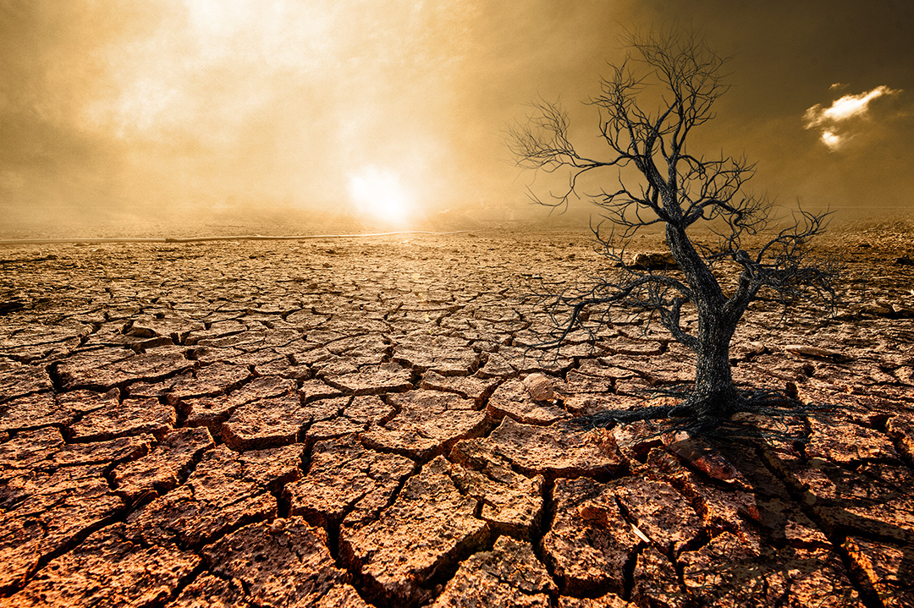

Olas de calor
Las temperaturas extremas pueden afectar la salud, aumentar la demanda de agua y energía y perjudicar los cultivos.
Deshielo
El aumento de la temperatura derrite glaciares y capas de hielo, contribuyendo a elevar el nivel del mar.
Aumento del nivel del mar
Las zonas costeras pueden enfrentar más inundaciones y erosión debido a la subida del nivel del océano.
Pérdida de biodiversidad
Algunas especies pierden sus hábitats y tienen dificultades para adaptarse a los cambios de temperatura.
Sequías
En ciertas regiones, las sequías pueden reducir la disponibilidad de agua y dificultar la producción de alimentos.
Lluvias intensas
El cambio climático puede intensificar las precipitaciones extremas en algunas regiones y aumentar el riesgo de inundaciones.
Las consecuencias son reales

La sequía es una de las principales consecuencias del calentamiento global.
¿Por qué debemos actuar?
Las consecuencias no son iguales en todas partes. Reducir las emisiones y prepararnos para los riesgos climáticos ayuda a proteger a las personas y la naturaleza.
Todavía podemos hacer la diferencia
Conoce algunas acciones que ayudan a reducir nuestro impacto y a construir comunidades más sostenibles.
Descubrir soluciones →